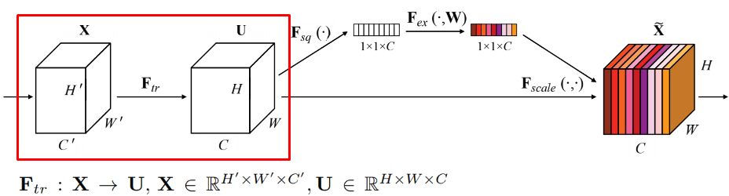
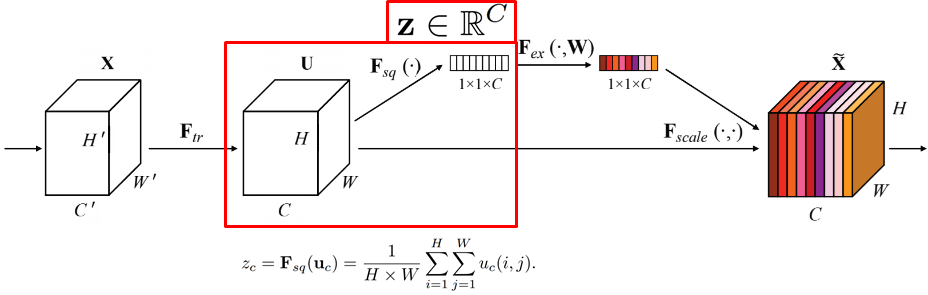
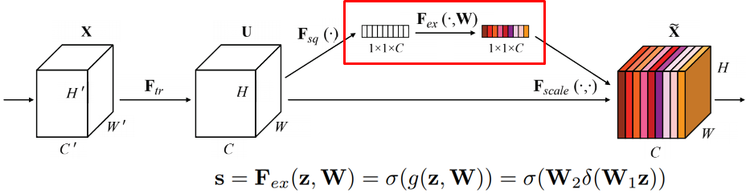
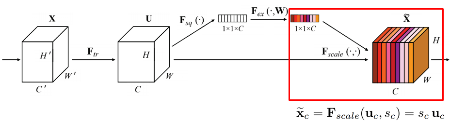
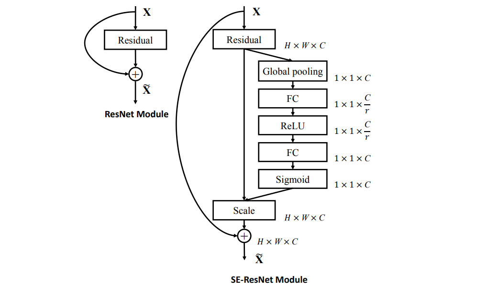
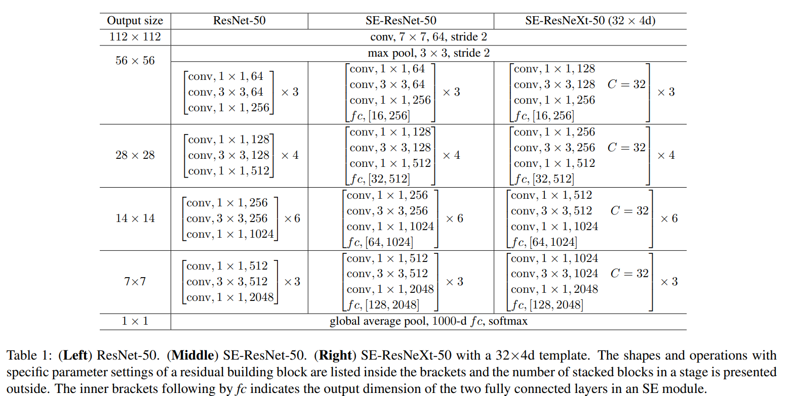

SENet 相較於原本的 ResNet 架構加了一些輕量級的機制，幫助神經網路了解全域性的資訊，並且能夠依通道（channel）的重要程度選擇性的調節不同通道（channel）激勵程度。換句話說，SENet 提升神經網路模型了解通道間關係的能力。
這邊把 SE 的架構依流程分成四個步驟來介紹。這邊圖片來源皆是原論文[1]，有些圖片加了圖形或文字輔助。

$F_{tr}$ 表示的是 $\bold X$ 到 $\bold U$ 的轉換關係 (tr: transformation)，比如是可以是卷積（convolution）。

將 H、W 兩個維度擠壓成一個維度。這邊的操作簡單來說就是全域平均池化（global average pooling）。論文中有提到作者們有實驗過 max pooling 和 average pooling，但 average pooling 的表現好一些。

經過一連串的計算，得到一串下個步驟會用到的向量。上圖下方的式子看似複雜，但其實只是把上個步驟的產物 $\bold z$ 經過一次全連接層（fully-connected layer）+ 非線性激勵涵數（這裡用 ReLU） + 再一次全連接層 + sigmoid（讓範圍變到 0~1），即得到這裡的 $\bold s$。這個步驟可以學習到不同通道（channel）之間的關係，決定要如何激勵（excitate）不同的通道。

用上一個得到的向量 $\bold s$ 對前面算出來的結果 $\bold U$ 進行 scale。$\bold s$ 和 $\bold U$ 進行通道間的相乘（channel-wise multiplication）。換句話說在前面的階段神經網路學習去判斷通道間的重要性，然後對原本的輸出進行調整。

上圖右邊這邊直接把 SENet 架構詳細的表示出來。上圖左邊是一般的 Residual Block，可以看出 SENet 只是多了右邊那一條 squeeze & exitation 用的路徑。

上圖是 SENet 和其它模型的比較。SE-ResNet-50 和 SE-ResNeXt-50 裡中括號內最下方的 $fc, [..., ...]$ 表示 excitation 用的兩個全連接層的特徵（feature）數量。
範例 code 出處為：2)，下面講解時有做一些修改。我們看怎麼用 SENet 的結構組出 Residual Block：
class SEBasicBlock(nn.Module):
expansion = 1
def __init__(self, inplanes, planes, stride=1, downsample=None, groups=1,
base_width=64, dilation=1, norm_layer=None,
*, reduction=16):
super(SEBasicBlock, self).__init__()
self.conv1 = conv3x3(inplanes, planes, stride) # 第一個 3x3 卷積
self.bn1 = nn.BatchNorm2d(planes)
self.relu = nn.ReLU(inplace=True)
self.conv2 = conv3x3(planes, planes, 1) # 第二個 3x3 卷積
self.bn2 = nn.BatchNorm2d(planes)
self.se = SELayer(planes, reduction) # 進行 SE（這裡的 SELayer 下方有介紹）
self.stride = stride
def forward(self, x):
residual = x
out = self.conv1(x) # 第一個 3x3 卷積
out = self.bn1(out)
out = self.relu(out)
out = self.conv2(out) # 第二個 3x3 卷積
out = self.bn2(out)
out = self.se(out) # 進 SE
out += residual # 殘缺學習，和上個 block 的輸出相加
out = self.relu(out)
return out
SE Layer:
class SELayer(nn.Module):
def __init__(self, channel, reduction=16):
super(SELayer, self).__init__()
self.avg_pool = nn.AdaptiveAvgPool2d(1) # 進行 squeeze
self.fc = nn.Sequential( # 進行 excitation
nn.Linear(channel, channel // reduction, bias=False),
nn.ReLU(inplace=True),
nn.Linear(channel // reduction, channel, bias=False),
nn.Sigmoid()
)
def forward(self, x):
b, c, _, _ = x.size()
y = self.avg_pool(x).view(b, c)
y = self.fc(y).view(b, c, 1, 1)
return x * y.expand_as(x) # 做 scale
以往卷積的研究常專注於「空間」的相關性，而 SENet 的架構做的是幫助原本的 ResNet 去了解不同「通道間」的相關性，學習各通道的重要性並進行激勵的調節，以提升神經網路模型的表現。本篇主要講述的是 SENet 基本的概念，希望能幫助你快速抓住基礎的概念，若有時間可以閱讀論文原文，以了解更多作者們的研究資訊。
[1] J. Hu, L. Shen and G. Sun, "Squeeze-and-Excitation Networks," 2018 IEEE/CVF Conference on Computer Vision and Pattern Recognition, 2018, pp. 7132-7141, doi: 10.1109/CVPR.2018.00745.
[2] Repository "senet.pytorch" on GitHub by moskomule (https://github.com/moskomule/senet.pytorch)